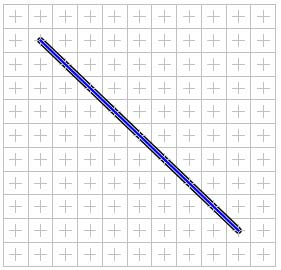

Parmi les cartes disponibles, la carte vectorielle nécessite quelques explications dans son usage. Pour continuer notre progression, nous ajoutons donc une nouvelle case à notre road book. Puis nous choisissons
Vectorielle dans le menu
Cartes - Type de carte.
Cette carte permet de manipuler des segments de droites qui sont délimités par deux points (un à chaque extrémité) et des morceaux de courbes qui sont délimités par trois points (un à chaque extrémité plus un point d'inflexion pour ajuster la courbure).
Placer un segment
Chaque extrémité doit être positionnée sur l'une des croix grise. Pour placer un segment:
|
Click sur le bouton Tracer un segment.
|
|
Placer la souris sur la croix correspondant au point de départ du segment.
|
|
Enfoncer le bouton de la souris, le déplacer tout en le maintenant enfoncé (mouvement de drag & drop) jusqu'à la croix correspondant à la deuxième extrémité du segment.
|
|
Relacher le bouton, le segment apparaît en bleu. Le segment en cours d'édition est affiché en bleu alors que les autres sont affichés en noir.
|

Déplacer un segment
|
Click sur le bouton Déplacer un point
|
|
Placer la souris sur l'extrémité à déplacer.
|
|
Enfoncer le bouton de la souris, le déplacer tout en le maintenant enfoncé (mouvement de drag & drop) jusqu'à atteindre la nouvelle position.
|
|
Relacher le bouton, le segment apparaît à sa nouvelle position.
|
Déplacement
|
Place après relachement du bouton
|
Placer une courbe
La démarche pour placer une courbe est identique à celle pour un segment. Au lieu de faire un click sur le bouton
Tracer un segment, il faut le faire sur le bouton
Tracer une courbe. Le point d'inflexion de la courbe ne peut pas être modifié lors du placement de la courbe, en revanche le mode
Déplacer un point permet de le faire.
Supprimer le segment (ou la courbe) en d'édition
Il suffit se faire un click sur le bouton
Supprimer. Si l'élément à supprimer n'est pas celui en cours d'édition, alors il faut utiliser le mode
Sélection (Click sur le bouton correspondant) pour le sélectionner avant de le supprimer.
Note
La vue aperçue permet d'avoir une vision de la carte telle qu'elle sera visible au final (Touts les éléments sont en noir et les points d'inflexion ne sont plus indiqués).